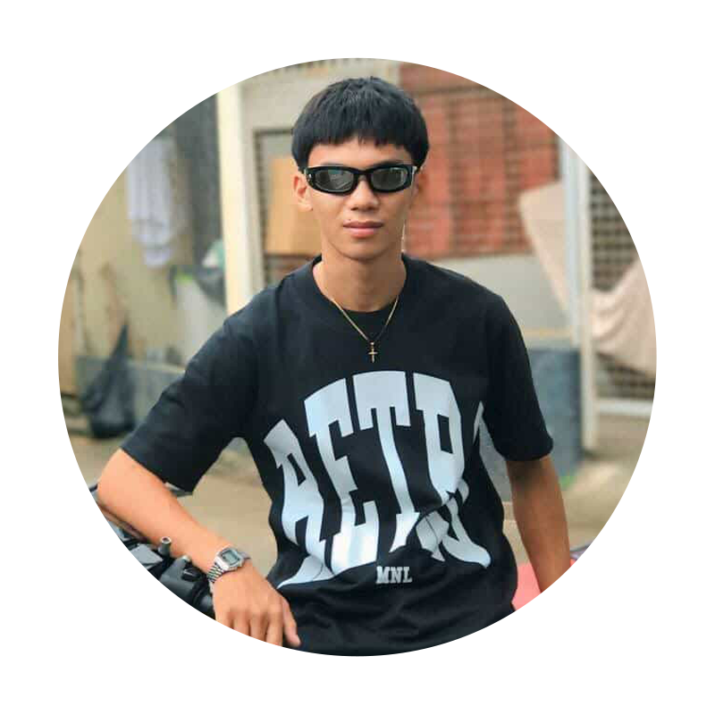
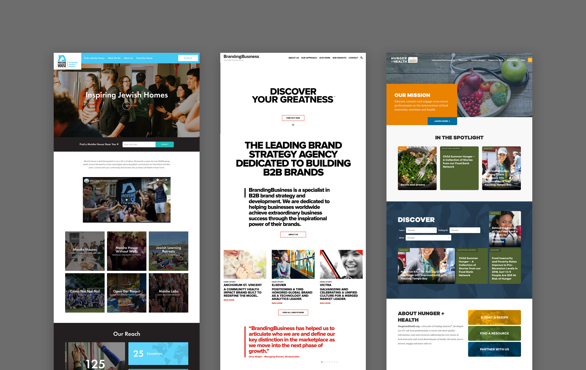
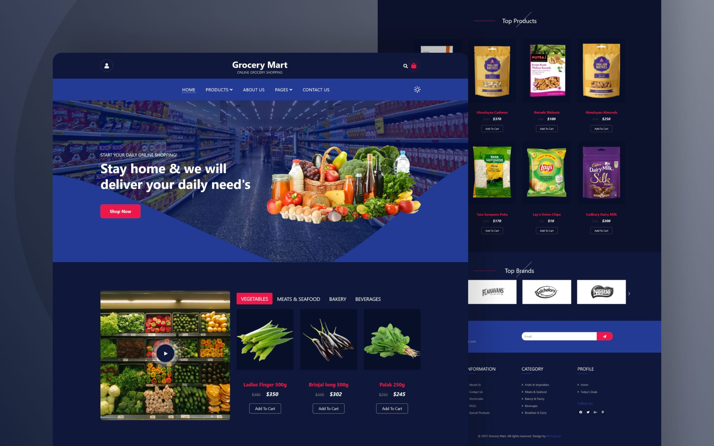
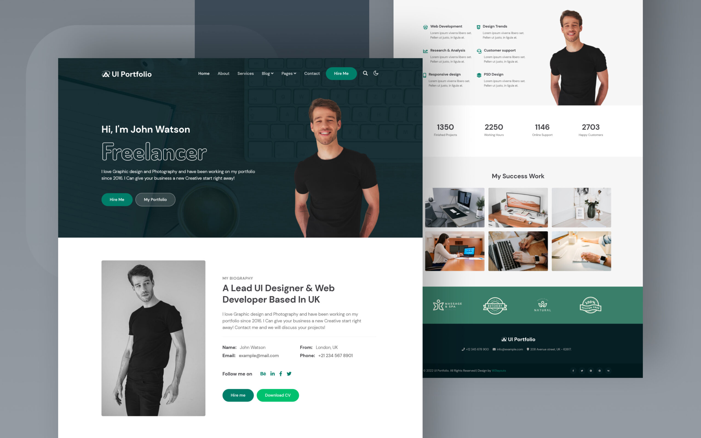

I specialize in building modern, responsive, and user-friendly websites that bring ideas to life. With a strong focus on clean code, creative design, and problem-solving, I strive to deliver digital solutions that make an impact. This portfolio is a reflection of my journey in web development — showcasing the skills I’ve honed, the projects I’ve completed, and the passion I bring to every line of code.
Download Resume
I’m a dedicated web developer with a strong passion for creating dynamic, responsive, and user-friendly websites. My journey in development has given me hands-on experience with HTML, CSS, and JavaScript, and I’m continuously learning new technologies to sharpen my skills. I enjoy turning ideas into reality through clean code, intuitive design, and practical solutions. Beyond technical skills, I value creativity, problem-solving, and teamwork — qualities that drive me to deliver meaningful digital experiences.


